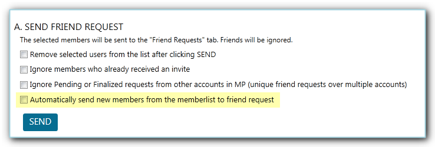
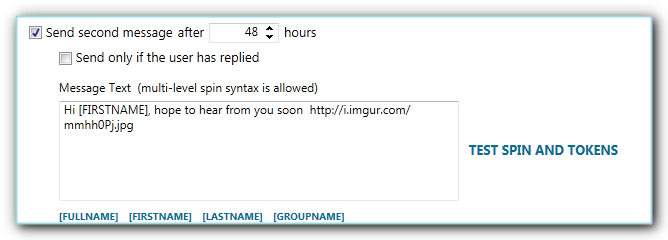
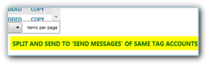
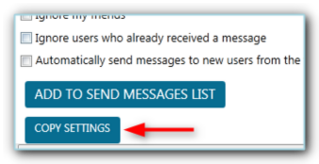

The Facebook Contact Tool in JARVEE is where you go to when you want to send a message or friend request to people who are members of a group, likers of a page, users that interacted (likers) on a specific post which is relevant to your niche and so on. If used the right way, it’s a pretty useful feature that may definitely help you grow your account.
It has 6 tabs as seen below and on this post, we will go through each of them to help you better understand what the tool is capable of.

How To Extract Users From Facebook?
Extract Members tab (semi-automatic method of extracting users)
First stop is the Extract Members tab. Basically, this is where you add a valid extraction link from where you want to scrape the users you either want to message or send a friend request to.

In the Extract Members tab, there are several ways of extracting users:
- The usual way is to add the extraction link in the designated box and click ‘Extract Users’
- You got 3 other options on how you can extract users. You can:
- Find Friends with Find Friends with Highshcool
- Find Friends with Find Friends with College
- Find Friends with Current City
- You have there the ‘Scroll the search page for X seconds’, this is the amount of time that JARVEE will scroll the page to scrape users, so the more scroll time you indicated, the more users will be scraped.
- If you’d like to only scrape English names, you can tick the check box for ‘Skip Non English names.
- You can stop ongoing extractions by clicking the respective button for that action.
On this method of extracting users, JARVEE will go to https://www.facebook.com/find-friends/browser/ and do a search based on the Highschool, College or Current City you specified. As you can see this Facebook contact tool is quite versatile.
Note: When you click on the Extract Users button, the link will then move to the table below and you’ll see how many users got extracted or if there was an error with the extraction (0,-1)

Auto Extract tab (fully automatic method of extracting users)
As you’ve read above, when extracting users via Extract Members tab, you’d still need to click on the Extract Users button to execute the action, so whenever you need to scrape users from the extraction link, you’d need to add the link and click extract which could be bothersome if you’d be extracting from the same link over and over again to get new members. Therefore, if there is a particular link where you want to scrape users from on a regular basis, then go to the Auto Extract tab.

- Same with the Extract Members tab, you’ll need to add the extraction link/s in the appropriate box
- Set how often (in hours) you want to extract from the link
- Set the scroll time, again, the more scroll time you use, the more results you’ll get, don’t set it too much though or it can timeout.
- Skip Non-English names (optional)
- Start the tool
NOTE: Same thing with the Extract Members, you’ll see the extraction results on the table below.

Where do I find the Facebook extracted users?
Use Members tab
All extracted members/users are sent to the Use Members tab. From here you can select the users by ticking the check box of the respective user.

After you have selected the users, you can either
A.) Send Friend Request, just tick your preferred options then click Send button.
NOTE: Keep in mind that if you have ticked the option to ‘Automatically send new members…’, the extracted users will no longer appear on the Members List, they get automatically sent to the Friend Request tab.

B.) Send Message to Selected Users
– Create your message (for personal touch, you can use tokens and spintax; there is no option to attach an image but you can add an image link and Facebook will automatically display the preview of that link)
– Tick the check box of your preferred options (see below for more information about ‘Send a second message’ option)
– When you are done with your setup, you can click on the ‘Add To Send Message List’ button and it will send the selected users to the Send Messages tab and get queued for execution.

NOTE: You can opt to ‘Send a second message’. Same thing, you can use a token , spintax and include an image link if you want to. The JARVEE Facebook contact tool has it all!
You can take advantage of this option if you want to make a follow up on the initial message you sent when user has not replied within X hours. Or you can choose to send a second message only when the user has replied.

More on Use Members tab
You also have there several action links such as Advanced Selection, Remove Selected, Export Selected, Import Users and Add Friends.

Advanced Selection — from here, you can filter users, select all users, remove selected users, tag selected users, export selected, send selected to Facebook Comment and Likes tool, remove tag and so on.

Remove Selected — you click on this when you want to remove all the users you’ve manually selected
Export Selected — click on this option if you want to export the users you’ve selected
Import Users — if you have a list of users you want to add to the tool, you can import them by clicking this link. Learn about the import file format here.
Add Friends — to quickly add your friends, just click this action link.
Below the Members List, you’ll see more quick options:
Select All, Select None
Split Between Same Tag Accounts – this will split and send the users to other accounts that had the same tag as the account (at least 1 same tag)
Split and Send To ‘Friend Requests’ of Same Tag Accounts – this will split and send the users to the ‘Friend Requests’ tab of other accounts that share same tag (at least 1 same tag)
Split and Send To Send Message of Same Tag Accounts – this will split and send the users to the ‘Send Message’ tab of other accounts that share same tag (at least 1 same tag)


And let’s not forget the “Copy Settings” button at the very bottom of the Use Members tab, with this magic button, it would let you copy whatever you want from the source account to selected accounts in just a few clicks.

Friend Requests tab in the Facebook Contact Tool
This is the tab where the users you’ve previously selected and sent to friend request go to and it would only take a few minutes to configure and get this tool running.
- You start by choosing the X-Y minutes before each new operation
- Choose the number of friend request you want to send each day
- You can also cancel X-Y number of requests each day
- When cancelling a request, you can choose to cancel after X days as well as opt to keep your pending requests at a minimum since it’s not good to have a lot of pending requests.
- By default, the requests are sent from top to bottom, but you can choose to pick a random user from the list
- Decide on the hours when you want the tool to send the friend requests
- Also, select the days of the week when you want the tool to
- If you want to cancel the requests you’ve sent outside JARVEE, you can choose to do that in the Friend Requests tab, just tick the corresponding option, configure the given settings and click the Extract Friend Request button.
- You may also send a message to people who have accepted your request and even send a second message if the user replied to the said message.
- As soon as you are finished with your settings, you can start sending out requests by switching the tool on.


NOTE: This will only send the message if the Send Messages tab is switched ON


All the users that you’ve previously selected and sent to Friend Request tab will appear under the Pending table and when the tool starts sending requests, it will move the user that received the request to the Results (Successful Requests) table. From the Results table, you’ll also see the status of the requests, either Accepted otherwise those that have not been accepted yet will show as Pending.

Auto Reply To New Messages tab
As you can see from the highlighted text on the image below, this tool visits the Facebook Messenger, will scrape users that have sent a message and sends them to the Send Messages tab where they will wait for execution, hence the Send Messages tab should be switched ON to start sending auto replies to new messages.
The message text you create here supports tokens and spintax. You can also set how often the tool will check for new messages every X minutes and should you wish to extract the users immediately, you can click on the ‘Extract Now’ action link at the bottom. Don’t forget to switch the tool ON once you’re done with setting it up.

How do I start sending the messages from the Facebook Contact Tool?
Send Messages tab
This is the tab where all the users you’ve sent from Use Members, Friend Requests and Auto Reply To New Messages go to. That being said, they will all respect the settings you indicate here when sending out the messages. In order to use the Facebook contact tool successfully make sure the settings you choose here are the right ones.
- Set the wait between minutes before each new operation. You have X-Y minutes and on every operation, JARVEE will choose a random minute based on the values you’ve selected for X-Y.
- Choose how many messages will go out on each operation. Again, it’s random between the 2 values you put there.
- Decide the maximum number of messages you want to send each day. You may increase the number of messages you send daily until it reaches the maximum number you prefer.
- Just like when sending a Friend Request, JARVEE goes from the top of the list moving downwards by default but you can have it pick randomly from the users on the Pending Send Message table.
- You can also delete pending messages that are older than X days
- As previously mentioned, there is no option to upload an image to your message but you can add an image link (or whatever link) and Facebook will automatically display the preview. In connection with that, you can choose to delete the link after the preview has been displayed.
- Sometimes, when you send messages too fast or too much, Facebook will display a captcha, hence you can select to stop the tool when it does get a captcha and let it rest for a few hours to keep your account safe.
- Decide on the hours when you want to send messages.
- Also, select the days of the week when you want the tool to send out messages.
- When you are all set and ready to go, just turn the switch ON and it would start sending messages depending on your settings.


All users queued to receive a message are listed in the Pending Send Message table then they will move to the Results (Successful Requests) table as soon as they’ve been processed.
Additionally, you can import users on the Pending Send Message table in case you already have a list of users and messages prepared, just make sure you have the correct import format.

Now you know everything you need to in order to use the Facebook Contact Tool in JARVEE successfully. Should you have any additional questions feel free to post below or contact our support.
Vernia says
Thank you for this tutorial on how to use the contact tool, I wanted to extract group members and start adding them as friend but I had no idea how to do that until I read this tutorial.
John says
Do you have an idea about how many friends requests I can send per day without Facebook temporary blocking me from doing so?
Adam says
It depends on your account’s standing. I would start slow with just a couple and send more and more each day. Also don’t forget to delete the request for the people that don’t accept you in a day or two as they’ll probably never accept you anyway.
Claudia says
Hello Adam,
Thanks for the insightful tutorial! I used some other tool before to send messages automatically, but Jarvee has many more options and you can also auto reply to new messages which is something that I was trying to do manually, I mean to reply as fast as possible to my potential customers, since they really appreciate that. Love that I can do both with this tool, now I have more time to focus on other stuff.
Theresa says
How many messages I can send per day in Facebook without getting banned? Can we use spin syntax in our message text to make it harder for Facebook to detect that we are sending the same message to multiple users?
Adam says
Depends on your account, if it’s new less of them, if its old and used constantly more. Try with just a few and grow it slowly over time. And yes, using spin syntax is highly advisable.
John says
Under “”Use Members”” I see an Import Users button, I tried to import some users but it didn’t work.
I wonder which format works, maybe I need to export 1 user as an example and respect that exported file format for the users I want to import?
Adam says
Yes, that will definitely work, if not, contact support and they will be happy to help !
Tomas says
How can I grow my facebook page, without using my personal profile?
Adam says
You can do some actions as a Fb page instead of a profile, like leaving comments or likes on other pages, however you cannot join groups as a page or do any actions on groups. If you want to take full advantage of Fb to promote your page you will need an profile to do it from, if you don’t want to use your own, you can create a secondary one and add that account as an admin on that page and promote the page with the secondary account.
Steev says
Hello, I tried to comment as a page, but it still comments with my personal profile? i did check the page it should comment from…What am doing wrong?
Thank you!
Adam says
Please send screenshots with your settings to support and they will check it out.
Miranet says
This tool is not a tool this is a nuclear weapon !
Adam says
Hahaha, thank you 🙂
Bittu says
Jarvee automatically queue the sending message somewhere(May be on some memory thread), because even if I delete all the pending(send) message, it’s keep sending the secondary message. I think due to my aggressive setting those messages are queue somewhere. Is there any way to clear/clean those operation which is on queue?
Adam says
Hmm, contact support with this and they will take a look.
Anon says
Send messege Module – Option 6
“Remove the link from the post after facebook display the preview”
Is not working anymore.
Please fix it.
Adam says
Please contact support about this and they will take a look.
Your Anonymous User says
Jarvee consume much bandwidth in my server, so is there any way to disable image loading option in embedded browser?
Chrome have option to disable image loading, just visit this in your chrome address bar “chrome://settings/content/”
Mozilla also provide such a option. So If you’re using one of their codes in your embedded browser, then it will be easy to add such a option.
It will really save my huge cost in cloud.
Adam says
Please contact support about this, and they will take a look 😉
Your Anonymous User says
“Remove the link from the post after Facebook display preview is not working” is not working, please fix it.
Adam says
Please contact support about this and they will take a look, this is not the place to report such issues 🙂
developer says
1. i added a url post and i hit extract and it just says pending. I dont see any users extracting.
2. when i open app first time it ask me if i want to access online how can i get online access to this app.
Adam says
1. you will have to wait for some time for it to finish and can see the results in the results tab
2. this only works as a windows software so there is no online access to it, never was, never will be, I am not sure what you’re referring to, maybe your online account but that’s just to manage your account with us nothing else
Morgan Marley says
Your tool is amazing! I just started using it and it’s super easy! So far everything works.
Great job!
Adam says
Thank you, glad you like it Morgan 🙂
Hannah says
Thank you for this tutorial on how to use the contact tool, I wanted to extract other members except the group and start adding them as friend but I had no idea how to do that until I read this tutorial.
Jo says
Hello, How Can I make a more attractive profile ? (For get more people accept my friend request ?) And do you know the poucent of transformation ?
Lud says
Hi there,
When I add a Facebook page in the Extract Memer tab, it keep on 0 and never trigger the extraction. Why ?
Adni says
It could be couple of things:
– Night mode is turned on
– Account that you’re using for extraction is not in VALID state
– Proxy doesn’t work
It would be best to contact us with screenshot of Extract users tab.
Joy says
Can I send Friend Requests as a page (that I am admin of) and not as a profile? I saw a previous comment that suggested making a public profile instead of a business page. But, it would be great if this feature was built into Jarvee and it allowed you to select the page you needed the action to be performed on behalf of.
Adni says
Pages can’t interact with profiles (except in case when profile sent message to page, then you can respond to it), so, as a page, you can’t send friend request.
Weronika says
I have used the “use Member” section, added all my friends and send to the message list.. after few days I would like to add new contacts but again its adding the same people what before.. is there any option that once I have send a message to someone it won’t double the msg.. ? or is there something like automatically updating the message list based on my current fb friends list if I am adding someone automatically “?
Bruce says
You might want to check the options “Ignore users who already received the message” and “Automatically send messages to new users from the table at the top”. These options are located at the bottom of the window. Also, you should use Auto Extract tool if you want to make everything automated.
nino says
Hi,
I started extraction of FB members from FB groups.
It says :”PENDING”. No users are extracted (see screenshot below)
http://prntscr.com/m3yhu7
Do you have any idea why it doesn’t work?
Bruce says
Please contact support and we’ll check it out.
Khan says
Hi, Can i extract (likers and commetors) of a specific post from a different page, and add them as follower/friend and message them?
Bruce says
Yes, use Contact tool > Extract users and add post URL there.
Johan says
is there a way to extract users from a page but filter it by cities or country ?
Bruce says
This was possible before until Facebook didn’t restrict availability of Facebook Graph Search. You could search for (i.e.): people who liked coca cola from New York and you would get a list. Unfortunately, Facebook had to restrict it due to all issues they had regarding privacy protection.
dat says
Hi, I extracted members of a group but I did not see the phone numbers and emails. Is it possible to exact the credentials ? Thanks
Bruce says
Unfortunately, FB doesn’t show that information anymore.
vishal says
Hi, can i send a message from my Facebook page to specific post likers? because whenever i extract users from a URL and use them to send a message the messages are going from the admin’s account and not the facebook page.
Bruce says
Unfortunately, we don’t have that feature.
Cedric says
Hi, I use it to send messages and it works well. It keeps sending the same message to users though. I have to go through the list on messenger daily and delete them… how can I make sure it doesn’t resend the same message twice or more?
FYI: I used to do that manually before I used the tool. Could it be the cause?
Adam says
please contact support with this and they will help you out.
NewBee says
Hello Jarvee,
I want to grow my Facebook group members quickly. I have several questions need your help.
1) So first I try to invite my friends to the group by using the invite tool, the question is: But if one of my friends is already in my group, is Jarvee will automatically skip that friend?
2) Can I use the Contact tool to extract the members from other groups (not my group), export them to the local system, then import them to the Invite tool to add to my own group?
3) How to monitor or collect the hot posts in other groups?
4) If the above methods don’t work, what is the best way to grow a group?
Thanks.
Elaina M says
Please send an email to our Support Team via https://jarvee.com/contact/ for further assistance, thank you.
Karim Arditi says
Hi, I am trying to extract members from a 65k sized group and no members are being scraped, please help
Elaina M says
Kindly email the support team for further assistance, thank you.